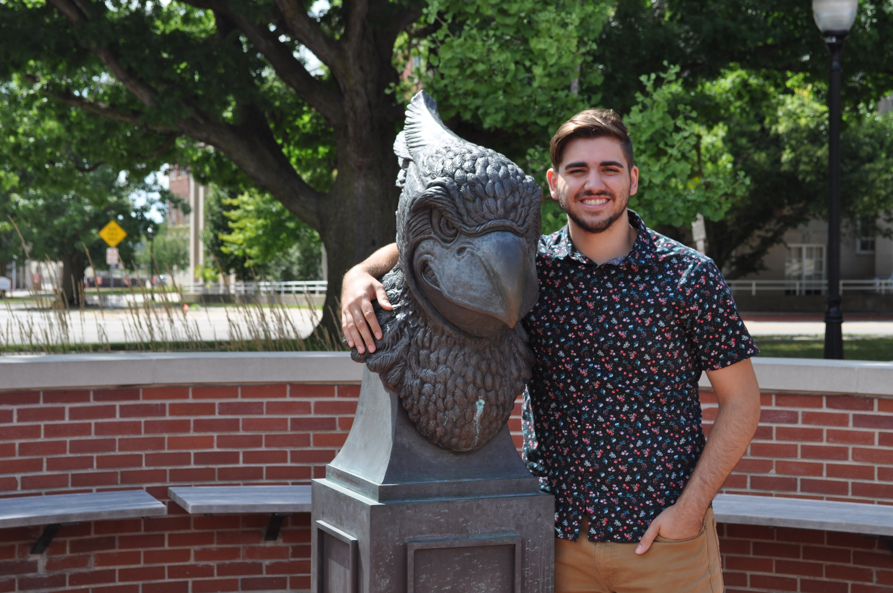
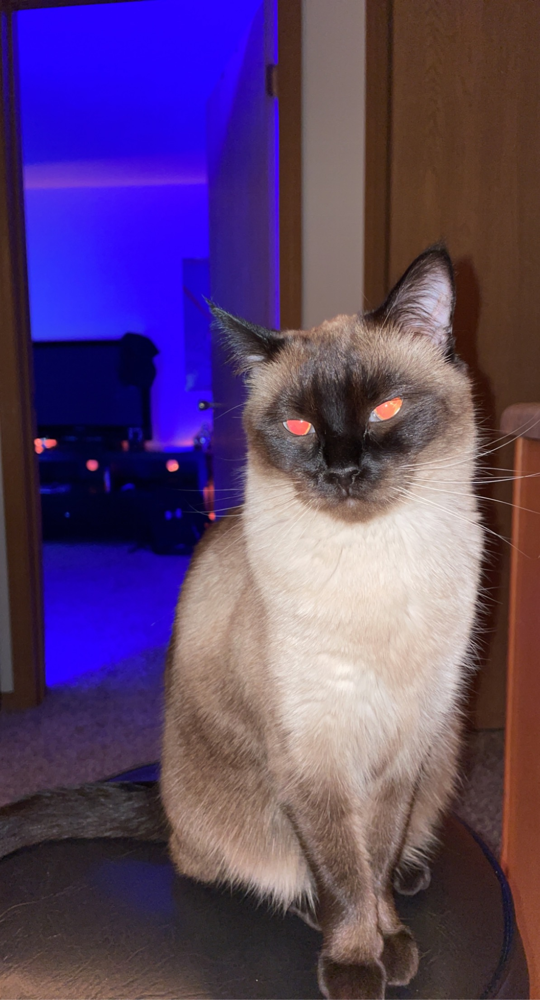
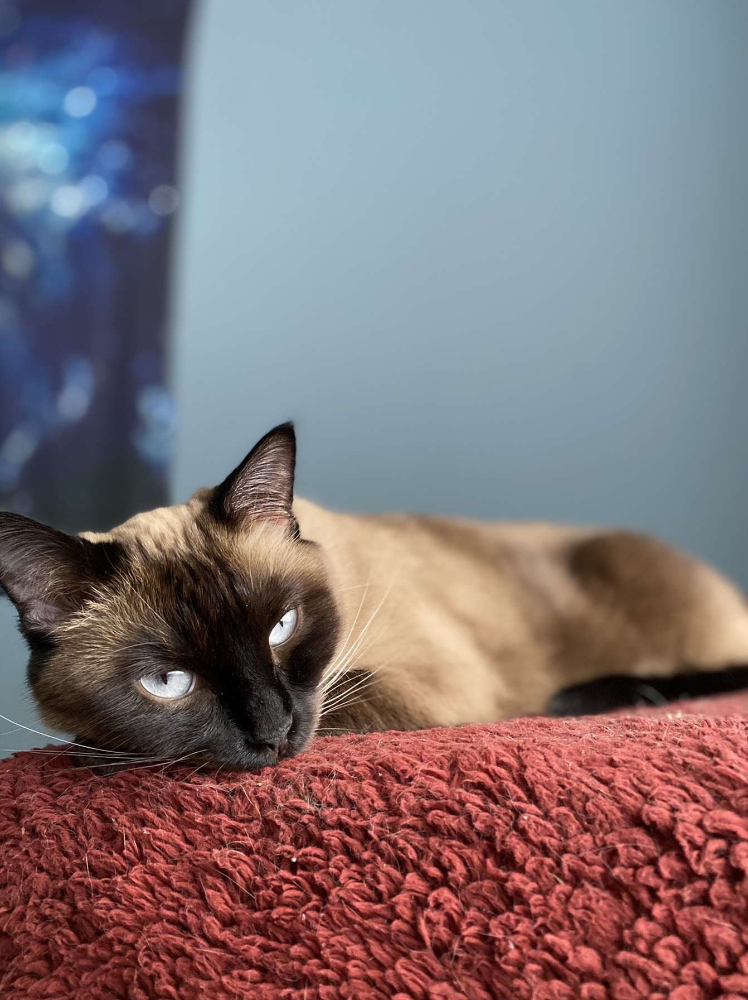
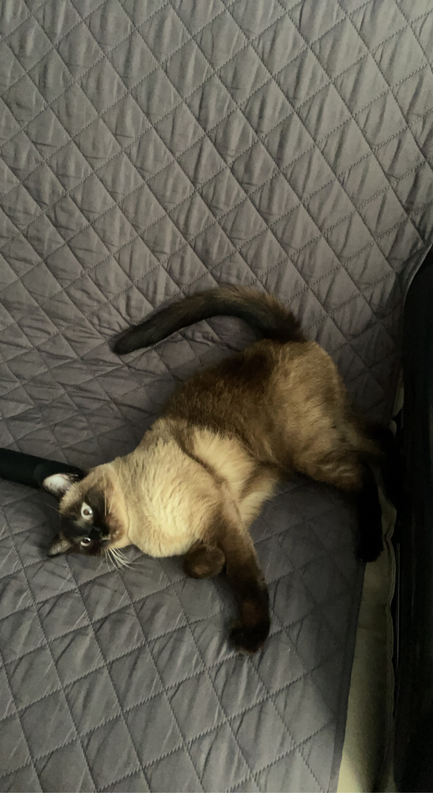

about
Hello! My name is Colin Winkelmann, and I am a junior at Illinois State University. I am studying Creative Technologies , and I'm enjoying every minute of it! My focuses are on Web Development, Audio Engineering, Video Production, and Game Development. Ever since I was young, I knew that my passion lied somewhere in the realm of Creative Technologies. Most of my free time was spent filming youtube videos (action-shorts) with my neighbor's help. The remainder of my free time was dedicated to composing songs on Garageband. My family would constantly hear me ask "Where's the family iPad?", just so I could migrate the ideas in my head to an actual audio workstation. Technology and creativity are the perfect marriage for me to express my creative ideas.
My favorite thing to do is compose music digitally. I use FL Studio to create rap beats, ambient pieces, and other electronic songs. During my sophomore year, I wrote the soundtrack (along with a few others) to a game that was developed by the Game Design Team. You can hear the OST for the 2020 Club's Game, Ground Zero, here. You can listen to my released beats playlist here. I also work on some experimental types of music, and I enjoy producing ambient style pieces. My CTK 345 Final Project is a piece in which I experimented with ambient digital as well as acoustic sounds.
Thank you for checking out my page!
Also, check out some pictures of my cat, Frieza!
  {kind=link}
{kind=link}
{kind=link}